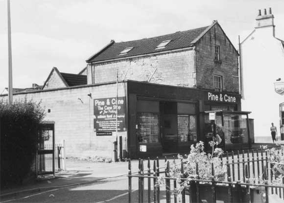
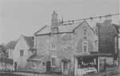
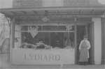

Type of buildings:
Commercial
Listing:
Grade ll
Plan and elevation:
The properties form a complex centred upon an original building, which was single
pile of two units and on 2 1/2 storeys
Summary of the probable main building
history:
Late 16th Century, cross wing added mid 17th Century. Another upper floor and
attic added in the late 18th Century. Additional building about 1875. East extension
and shop frontages after about 1925.

TThe complex of BE 014 & 015 viewed from the north
Construction: The complex was built in five phases.
Phase 1 is represented by a low ceiled 2 1/2 storey building of roughly coursed
locally quarried rubble stone, much weathered and oxidised and of variable quality.
The building is gable end to the main street with the original frontage facing
south-west. This elevation probably had three two-light mullion windows of ovolo
section on the ground floor although only one to the north end is visible (albeit
blocked and partially obstructed by a concrete block buttress). Only the edge
of the central mullion is apparent, it was later transformed into an internal
connecting door between the main building and an extension. This extension completely
covers the presumed third mullion to the north end of the façade. The entry
is to the left. This has a plain freestone surround with a modern lintel. Whether
this marks the position of the original entry is not certain. From the marks on
the south wall, visible from the inside of one of the extensions, there was a
side entry with steps up into the building. There were also presumably three two-light
mullion windows on the first floor. Only two are visible today, both blocked.
The central mullion is much mutilated but the northern mullion is still sound.
One light has the normal ovolo section surround, the other has a banded or fillet
moulding and was apparently a fixed light. The central mullion is then ovolo moulded
on one side with a fillet moulding on the other side. All the windows are symmetrically
arranged and are under drip moulds with returns. The stonework indicates that
this elevation was gabled with, presumably, a mullioned window. The other long
north-east elevation has retained its gable two-light mullioned window, now just
visible above the later flat roof east extension but clear upon a photograph of
the 1920’s (reproduced below). The respective heights and distances between
the ground floor, first floor and gable windows indicate that the original internal
ceiling heights were very low, not much above 7ft. The front wall is over 70 cms
thick. In all probability the building is of late 16th Century construction.
Phase 2 is represented by the construction of an almost square two-storey cross-wing with a pitch roof built against the south-east wall of the main building with its east gable end somewhat forward of the earlier building line. The entire complex is built upon a site sloping north-south towards the river. Consequently, although the roof line of the earlier building has been approximately maintained, the cross-wing is at a lower ground floor level and accessed via steps down. The wing has been subject to substantial later modification. The west former gable wall has been drastically reduced in height and with an opening cut through to give access to a later extension. The reduced wall is spanned by a recycled massive waney edged beam over, which may have been an original tie beam of the wing, and on top of the beam the wall has been rebuilt to the roof with ashlar blocks. This ashlar wall has three blocked openings, apparent former windows, at somewhat below roof level. The entire structure is open to the roof but the roof timbers are covered by plasterboard and are not visible or accessible. The south wall of squared coursed rubble has also been reduced in height and subsequently built up to the roof line with concrete blocks. The work on the west gable wall and south wall is of different periods. Interest centres on the remaining two walls - the north or party wall with the main building and the east gable wall. The former wall has been much repaired with inserted timbers which probably marks a earlier entry into the main building and above these a blocked opening at first floor level, again, presumably, indications of an earlier entry into the main building at this level. The present entry to the wing to the right is a later insertion but above this there is a straight joint marking where the party wall was extended eastwards to bring the wing forward of the main building at the east gable end. This gable wall on the ground floor level has an apparent blocked three-light window. Above this at the former first floor level there is another blocked window - visible from the exterior as a two-light mullion window of ovolo section with a straight drip label over. The rubble wall of the east gable is over 60 cms thick, which with the mullion window, is the best indication of construction date of the wing - probably mid 17th Century.
Phase 3 is represented by major changes to the main building by its extension upwards. As indicated by the change in the nature of the stonework from rubble to squared blocks the old gabled 2 1/2 storied building was transformed into a taller pitched roof building on two storeys with an attic. The ceiling heights were increased with the new floor level of the revamped structure cutting across the first floor windows of the old building. Six-over-six sash windows with dressed stone surrounds were place in the new north gable end facing the street. As indicated by the 1920’s photograph, an eight-over-eight window and a principal entry with a hood above on scrolled brackets were put into the new long east elevation, which have since been blocked and today are represented by alcoves in the interior wall. Similarly, the ashlar stacks (and louvre on the cross wing) shown in the photograph have since been removed. Probably, the single storey outhouse (since re-roofed and gable end modified) butted to the south-west long wall was erected contemporaneously with the revamping of the building, that is the late 18th Century and the complex had reached the state as shown on the 1786 Harcourt Masters map. The date of the first shop front to the north gable end is not known. It was certainly there in 1841 but it is likely that the structures had long since performed a commercial function.
Phase 4 is represented by the building of a malthouse immediately to the south of the complex at some time before 1840 (per the Tithe Map). The malthouse was demolished shortly after 1870 with the closure of the Batheaston Brewery and the subsequent building of a row of terrace houses on the site. The northern part of the site, between the complex and the terrace houses, was filled by a two-storey building approximately following the building line of the old cross-wing, that is, at right angles to the earliest structure, but higher as incorporating an extensive sub-ground floor level interconnecting with the cross wing. The sub-ground floor level has double doors in the west gable end flanked by a two-light window with a central heavy square mullion. There is an oculus in the gable apex. Otherwise, this new building was built in keeping with the terrace - pitched roof, plat band marking the separation between the ground and first floors, four-over-four window and coursed and squared rubble stone construction with thin ashlar party walls.
By 1841, at least, the complex was functioning as a butchers shop. According to an auctioneers particulars in that year “ … A most convenient dwelling-house, with open shop and adjoining high shed and yard …”. Further, another auctioneers particulars of 1925 gives a picture which is probably little changed since 1841 and recognisable today from the physical arrangements: “Butchers shop with dwelling house and paddock, slaughter house and stabling ….Shop has an attractive front to the street with salting house to west side. Dwelling house on 1st floor and attic. Slaughter house … has cattle and sheep pens. Stabling has two stalls with channel brick floors, loft over and paved washing yard. Paddock has 173 foot frontage.”
Phase 5 is represented by the flat roof extension to the east, the present double shop front and some minor rebuilding (for example, the south wall of the cross-wing, re-roofing the cross-wing to make it about 40 cms lower, modifications to the western outbuilding and repositioning entry to the residential accommodation above the shop premises). This work was carried out in the early to mid 20th Century - after 1925 or so when the premises were occupied by the Co-operative Retail Society.
Ownership/occupation:
Little is known of the early history of the building. According to the 1925 auctioneers
particulars, it was the subject to a 1000 years lease granted in 1596, a sub-lease
for 700 years granted in 1709, a further sub-lease for 672 years granted in 1746
and, apparently, a number of other leases and sub-leases. But “The Vendor
has not in her possession the original Indentures of Lease … or any copies
or abstract thereof nor any information as to the extent of property thereby demised.
She shall not be required to show in whose possession such leases are …”
By 1840, per the Tithe Apportionment schedule, the property was occupied by George Broad and described as a “house and offices” while the owner was John Smith who also owned the adjacent malthouse and brewery. According to the 1841 auctioneers particulars, George Broad operated as a butcher paying an annual rent of £25. Broad also owned the house and stables on the opposite side of the road in his own right although he was not in occupation of them. George Broad may have been in succession to John Broad, butcher, who in 1798 was offering a reward for the return of “Seven Fat Wether sheep”, strayed or stolen.
References:
- 1840 Batheaston Tithe Map and Apportionment Schedule, Somerset Record Office
- Auctioneers particulars, 1925, The Batheaston Society Archive, Cat.No. 0036
- “Bath Journal”, 31st December, 1798
- Batheaston Society Archive
Reference Pictures
| Viewed
from the north west |
Ovolo
and fillet mullions |
Phase
2 east gable wall (interior) with apparent blocked mullion window |
Survey Drawings
| Ground
Plan |
Section
(South Wing) |
Section
(West Elevatio) |
Images from the Archives
 |
 |
| The butchers shop about 1920 | Mr Lydiard standing in doorway. About 1920 |